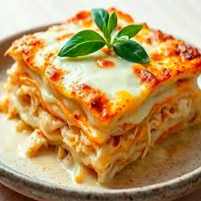
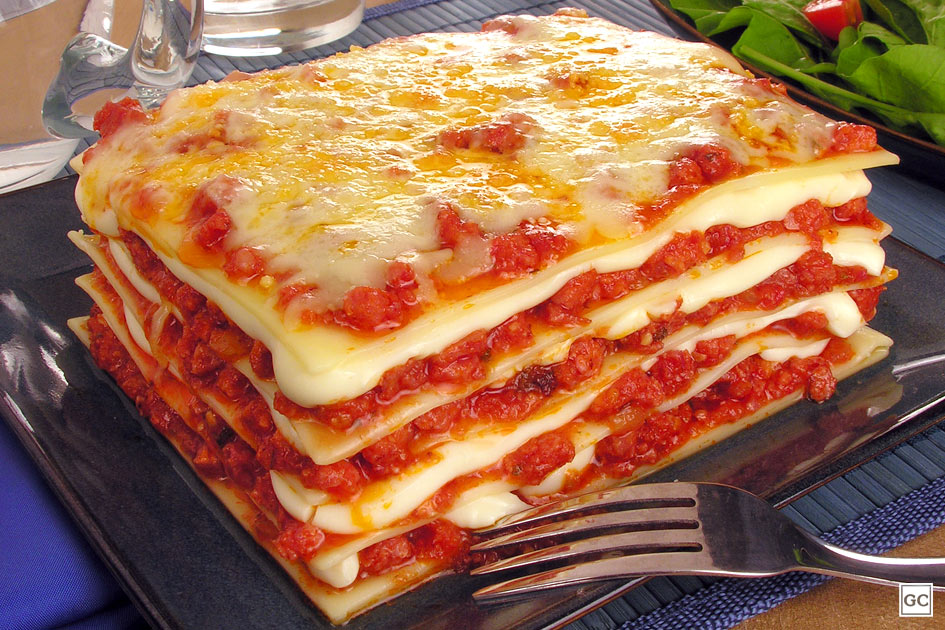

Vai uma musica enquanto prepara?
Lasanha à Bolonhesa:
- O Molho Bolonhesa
500g de carne moída (patinho ou acém)
100g de bacon picadinho (para aquele toque defumado)
1 cebola média picada e 3 dentes de alho amassados
2 latas de tomate pelado (ou 800g de molho de tomate de boa qualidade)
1 colher de sopa de extrato de tomate
Sal, pimenta-do-reino e manjericão a gosto
Opcional: meia cenoura ralada bem fina (ajuda a tirar a acidez do tomate)
- O Molho Branco / Béchamel (A Cremosidade):
1 litro de leite integral
3 colheres (sopa) de manteiga
3 colheres (sopa) de farinha de trigo
Sal e uma pitada generosa de noz-moscada
Montagem:
500g de massa para lasanha (pré-cozida ou fresca)
400g de queijo muçarela fatiado
100g de queijo parmesão ralado (para gratinar)
Modo de Preparo
- O Bolonhesa
Em uma panela grande, frite o bacon.
Adicione a carne moída e refogue até secar a água e começar a dourar.
Junte a cebola, o alho (e a cenoura, se usar). Adicione o extrato de tomate, os tomates pelados e um pouco de água.
Deixe cozinhar em fogo baixo por pelo menos 30 minutos (quanto mais tempo, melhor o sabor). Ajuste o sal e a pimenta.
- O Molho Branco
Derreta a manteiga e adicione a farinha, mexendo por 2 minutos para "cozinhar" o trigo (não deixe escurecer).
Adicione o leite aos poucos, mexendo sem parar com um batedor de arame (fouet) para não empelotar.
Cozinhe até engrossar. Finalize com sal e noz-moscada.
- A Montagem (A Engenharia)
Siga esta ordem clássica em um refratário grande:
Uma camada fina de molho bolonhesa no fundo.
Massa de lasanha.
Molho branco.
Queijo muçarela.
Molho bolonhesa.
Repita as camadas até o topo.
Finalize com bastante parmesão ralado.
Tempo de Forno:
Leve ao forno preaquecido a 180°C por cerca de 30 a 40 minutos.
500g de carne moída (patinho ou acém)
100g de bacon picadinho (para aquele toque defumado)
1 cebola média picada e 3 dentes de alho amassados
2 latas de tomate pelado (ou 800g de molho de tomate de boa qualidade)
1 colher de sopa de extrato de tomate
Sal, pimenta-do-reino e manjericão a gosto
Opcional: meia cenoura ralada bem fina (ajuda a tirar a acidez do tomate)
1 litro de leite integral
3 colheres (sopa) de manteiga
3 colheres (sopa) de farinha de trigo
Sal e uma pitada generosa de noz-moscada
Montagem:
500g de massa para lasanha (pré-cozida ou fresca)
400g de queijo muçarela fatiado
100g de queijo parmesão ralado (para gratinar)
Modo de Preparo
Em uma panela grande, frite o bacon.
Adicione a carne moída e refogue até secar a água e começar a dourar.
Junte a cebola, o alho (e a cenoura, se usar). Adicione o extrato de tomate, os tomates pelados e um pouco de água.
Deixe cozinhar em fogo baixo por pelo menos 30 minutos (quanto mais tempo, melhor o sabor). Ajuste o sal e a pimenta.
Adicione o leite aos poucos, mexendo sem parar com um batedor de arame (fouet) para não empelotar.
Cozinhe até engrossar. Finalize com sal e noz-moscada.
Siga esta ordem clássica em um refratário grande:
Uma camada fina de molho bolonhesa no fundo.
Massa de lasanha.
Molho branco.
Queijo muçarela.
Molho bolonhesa.
Repita as camadas até o topo.
Finalize com bastante parmesão ralado.
Tempo de Forno:
Leve ao forno preaquecido a 180°C por cerca de 30 a 40 minutos.

Lasanha de Frango
- 1kg de peito de frango cozido e desfiado
- O Molho Branco (Béchamel)
- Montagem:
- Refogando o Frango
- O Molho Branco Especial
- Montagem
colheres (sopa) de azeite
1 cebola picada e 3 dentes de alho amassados
1 lata de milho verde (opcional, mas combina muito)
1 sachê de molho de tomate (para dar cor e umidade)
200g de requeijão cremoso (o segredo da suculência)
Sal, pimenta-do-reino, páprica defumada e cheiro-verde a gosto
1 litro de leite
3 colheres (sopa) de manteiga
3 colheres (sopa) de farinha de trigo
1 caixinha de creme de leite (para um toque extra de veludo)
Sal e noz-moscada
500g de massa para lasanha
400g de queijo muçarela
100g de queijo parmesão para gratinar
Modo de Preparo
Em uma panela, doure a cebola e o alho no azeite.
Adicione o frango desfiado e os temperos (sal, pimenta, páprica).
Junte o milho e o molho de tomate.
Deixe refogar por alguns minutos para os sabores casarem.
Por fim, desligue o fogo e misture o requeijão.
Isso vai impedir que o frango fique "esturricado" no forno.
Derreta a manteiga, adicione a farinha e mexa por 2 minutos.
Vá jogando o leite aos poucos e mexendo com um batedor (fouet) até engrossar.
Desligue o fogo, misture o creme de leite, ajuste o sal e rale a noz-moscada na hora.
Comece com uma camada de molho branco no fundo.
Coloque a massa.
Espalhe uma camada generosa de frango cremoso.
Coloque uma camada de muçarela.
Repita o processo até o topo, finalizando com molho branco e muito parmesão.
Tempo de Forno
Leve ao forno preaquecido a 200°C por cerca de 20 a 30 minutos (se a massa for pré-cozida)
ou até que o queijo esteja bem dourado e borbulhando.
Dica de mestre:
Se quiser elevar o nível, coloque um pouco de batata palha por cima depois de tirar do forno. Dá uma crocância que contrasta perfeitamente com a cremosidade do frango.

Lasanha de Calabresa
- Ingredientes para o Recheio:
3 gomos de linguiça calabresa picados ou ralados
2 cebolas médias cortadas em fatias finas (meia-lua)
1 dente de alho picado
1 sachê de molho de tomate (340g)
Azeitonas picadas a gosto
Azeite para refogar
- Para a Montagem:
500g de massa de lasanha (pré-cozida)
400g de queijo muçarela fatiado
Queijo parmesão ralado para finalizar
Orégano a gosto
- Modo de Preparo:
1. Em uma panela, aqueça o azeite e frite a calabresa até ficar douradinha.
2. Adicione a cebola e o alho, refogando até que a cebola fique bem macia.
3. Despeje o molho de tomate e as azeitonas. Deixe apurar por 5 minutos em fogo baixo.
4. No seu refratário, comece com uma camada de molho, depois massa, depois queijo.
5. Repita o processo até finalizar com o queijo muçarela e o parmesão por cima.
6. Salpique orégano e leve ao forno (180°C) por 30 minutos ou até o queijo gratinar.
3 gomos de linguiça calabresa picados ou ralados
2 cebolas médias cortadas em fatias finas (meia-lua)
1 dente de alho picado
1 sachê de molho de tomate (340g)
Azeitonas picadas a gosto
Azeite para refogar
500g de massa de lasanha (pré-cozida)
400g de queijo muçarela fatiado
Queijo parmesão ralado para finalizar
Orégano a gosto
1. Em uma panela, aqueça o azeite e frite a calabresa até ficar douradinha.
2. Adicione a cebola e o alho, refogando até que a cebola fique bem macia.
3. Despeje o molho de tomate e as azeitonas. Deixe apurar por 5 minutos em fogo baixo.
4. No seu refratário, comece com uma camada de molho, depois massa, depois queijo.
5. Repita o processo até finalizar com o queijo muçarela e o parmesão por cima.
6. Salpique orégano e leve ao forno (180°C) por 30 minutos ou até o queijo gratinar.

Lasanha Especial Quatro Queijos
- Ingredientes para o Creme de Queijos:
1 litro de leite integral
2 colheres (sopa) de manteiga
2 colheres (sopa) de farinha de trigo
100g de queijo muçarela ralado
100g de queijo prato ralado
100g de queijo provolone ralado
50g de queijo gorgonzola esfarelado (dá o toque especial)
1 caixa de creme de leite (200g)
Noz-moscada e sal a gosto
- Para a Montagem:
500g de massa para lasanha
200g de queijo muçarela fatiado (para as camadas)
Queijo parmesão ralado para gratinar
- Modo de Preparo:
1. Em uma panela, derreta a manteiga e misture a farinha, mexendo por 2 minutos.
2. Adicione o leite aos poucos, mexendo sempre para não empelotar, até engrossar.
3. Desligue o fogo e adicione os quatro queijos (muçarela, prato, provolone e gorgonzola).
4. Mexa bem até que os queijos derretam no calor do molho e misture o creme de leite.
5. Em um refratário, intercale: molho de queijos, massa, fatias de muçarela.
6. Termine com uma camada generosa de molho e polvilhe o parmesão por cima.
7. Leve ao forno preaquecido a 180°C por cerca de 30 minutos ou até dourar bem.
1 litro de leite integral
2 colheres (sopa) de manteiga
2 colheres (sopa) de farinha de trigo
100g de queijo muçarela ralado
100g de queijo prato ralado
100g de queijo provolone ralado
50g de queijo gorgonzola esfarelado (dá o toque especial)
1 caixa de creme de leite (200g)
Noz-moscada e sal a gosto
500g de massa para lasanha
200g de queijo muçarela fatiado (para as camadas)
Queijo parmesão ralado para gratinar
1. Em uma panela, derreta a manteiga e misture a farinha, mexendo por 2 minutos.
2. Adicione o leite aos poucos, mexendo sempre para não empelotar, até engrossar.
3. Desligue o fogo e adicione os quatro queijos (muçarela, prato, provolone e gorgonzola).
4. Mexa bem até que os queijos derretam no calor do molho e misture o creme de leite.
5. Em um refratário, intercale: molho de queijos, massa, fatias de muçarela.
6. Termine com uma camada generosa de molho e polvilhe o parmesão por cima.
7. Leve ao forno preaquecido a 180°C por cerca de 30 minutos ou até dourar bem.
| Lasanha B | Lasanha F | Lasanha Q |
|---|---|---|
| ----300kcal---- | ----300kcal---- | ----300kcal---- |
| ----600kcal---- | ----600kcal---- | ----600kcal---- |